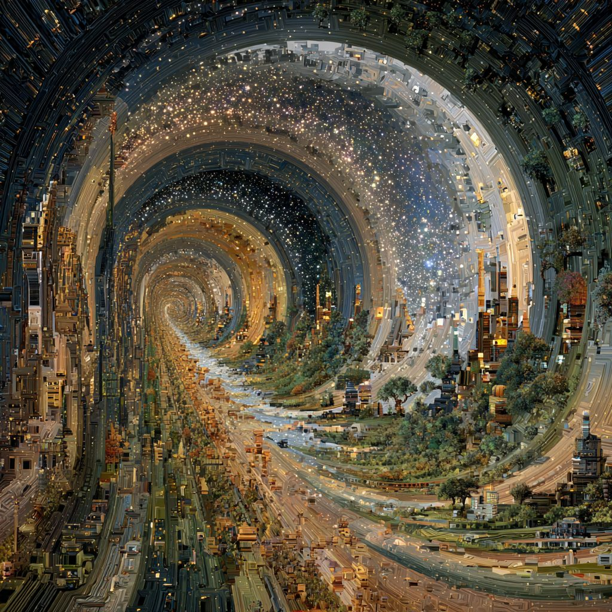

The AGI Revolution: So… What Do We Do Now?
We've been here before — just never quite like this. No, really. What are people supposed to do?
Fair Warning: Unprecedented Times, Again
Fair warning - this can potentially be a funny, uplifting read, or a really triggering one. But rest assured, I will land us somewhere safe.
It’s kinda funny that I’m once again writing about “unprecedented times.” The last time I wrote those exact words was during COVID, when the world didn’t yet have a cure. This time around, I’m writing about unprecedented times in reference to the upcoming, will-be-here-sooner-than-expected armies of AI Agents.

Humans Are Not Obsolete
It seems like the world is moving toward a future where no humans will have jobs. Everyone is going to be displaced, replaced, and the so-called “low-skilled” folks are left behind to suffer while the rest of the planet takes off. What a doom-filled picture that paints.
I want to make my stance here clear and sheer: that’s not the right way to think about any of this. People are precious. People are talented. People are adaptable. People are resilient. People are useful. People are beautiful. They’re just not set up to win right now. The system is set up to pit people against people, to create an artificial hierarchy of scarcity around talent. Instead of this meaningless war for promotion, people should be empowered to rebuild, upskill, restructure, and be deployed to solve millions of other existential questions we’ve barely scratched the surface of.
So… What’s Human Purpose Now?
The most fundamental question then becomes: what’s human purpose? That’s it. We answer that, we answer what people are meant to do. We answer how we’re supposed to think about the economy, competition, innovation, and talent restructuring. No easy ask. And it’s not like this hasn’t been the subject of millions of books. And it’s definitely not like I’m asking humanity’s generational question.
Here’s what I really mean: if you don’t need front-end engineers anymore, fine - find something else useful for them to do. Train these folks with the new skills required. Provide them with more AI Agents or any other necessary tools to complete the new job. Whatever we do, we don’t give up on humans.
Right now, it almost feels like we’ve given up on increasing the productivity and value of humans. We write people off as a lost cause and focus everything on creating a fully autonomous, competent AI Agent. I’m not saying we shouldn’t push science forward. I firmly believe we should enhance the efficacy and competence of AI, and along with it, the workforce. But if smart AI Agents exist, they shouldn’t exist to replace humans. They should exist so that humans can tackle new problems.
My sense is that most of these problems are blue-ocean problems, with no pioneer and no playbook. That’s the beauty of working at the technology frontier: you get to look at problems no one else has even thought about. That’s the next hard question to answer: what are the problems we should now deploy more people to solve? Chances are, people don’t even know yet what we’re supposed to do - so it’s like the blind leading the blind. Still, I have a hunch these problems will be existential.
Looking Back to Look Forward
To answer them, we need to look back at history. Something similar in nature has happened before. This really isn’t the first time humans have been replaced. It happened during the Industrial Revolution. And somehow, we found a way back. We found a way to be resilient and persevere forward. The same sentiment will most likely apply here - we just don’t know what shape it will take yet.
At this point, I was stuck. That’s why I didn’t write for two weeks. You start reading things like AI-2027 and feel even more lost. Those pieces end with more questions than answers. And honestly - that’s okay.
Atlas - I think I’m onto something.
The Pain Before the Progress
The Industrial Revolution was a shift from agrarian, local economies to industrial, urban ones. It was brutal at first: families left the countryside, skilled artisans saw their trades vanish overnight, and new industrialists hoarded wealth and power. The air was dirty, the factories were unsafe, and the cities were overflowing. If you were alive in 1820s Manchester, you probably wouldn’t have described it as “progress.” Friedrich Engels, in The Condition of the Working Class in England (1845), painted a picture of misery so stark that it fueled Marx’s critique of capitalism.
How Humanity Pushed Through
And yet, humanity made it through. Not smoothly, not gracefully, and certainly not without cost. But over the decades, new institutions, new laws, and new cultural values emerged. Workers organized into trade unions. Governments passed child labor laws (the Factory Acts of 1833 onward in Britain). Universal public education spread to prepare citizens for industrial work. Life expectancy in cities was abysmal at first, but improved dramatically with 19th-century public health reforms: clean water, sewage systems, and housing codes. The disruption was real, but so was the adaptation.
When One Door Closes, Another Opens
This pattern is worth remembering now. The fear today is that armies of AI Agents will hollow out the job market, just like machines hollowed out cottage industries. But history reminds us: when one door closed, many others opened. The Industrial Revolution destroyed weaving as a household trade, but it created railways, steel mills, and new professions in engineering, management, and finance. Similarly, AGI may eliminate roles we consider “stable” today — software engineers, paralegals, analysts — but it will also create roles around entirely new frontiers.
Relevance Is Everything
So how did humanity actually get through the Industrial Revolution? It wasn’t painless. There was social upheaval and resistance. Early workers faced mass displacement. The Luddites in the 1810s smashed machines — not because they hated technology, but because they weren’t included in the new system’s benefits. This is crucial. People feel most hopeless not when they are sad or even struggling, but when they feel irrelevant. That’s it. And in the age of AGI, we should expect similar unrest if people feel left out.
Back in the 19th century, governments initially resisted change, favoring landowning elites. But over decades, they introduced labor laws, public education, and welfare systems. They expanded political rights — suffrage, unions, reform acts — giving workers a voice in shaping industrial society. The lesson is clear: we will need new institutions and initiatives to move people in meaningful directions. The one and only question we should ask and answer: how can we make people feel and be relevant throughout this transformation?
The Birth of Generational Missions
One of the big lessons from the Industrial Revolution is that people need more than jobs — they need direction. When the dust settled, society didn’t just keep building factories. It started declaring missions.
Think about it: governments and institutions began saying things like “We’re going to the moon.” Or “We’re declaring a war on cancer.” Or “We’re taking on the war on drugs.” These weren’t just policy choices; they were rallying cries. They gave people a sense that all the disruption, all the change, was building toward something bigger.
And here’s the important part: these missions didn’t come out of nowhere. They became possible because new technology unlocked new frontiers. Before the Industrial Revolution, nobody was asking about antibiotics, relativity, or spaceflight — because the tools to even imagine those things didn’t exist. Once steam power, chemistry, and physics matured, those questions suddenly went from impossible to urgent.
The real magic was this: somewhere, someone had to ruthlessly prioritize. Out of the millions of things society could have worked on, leaders and institutions picked a few generational ones and said: this is worth betting the future on. And that choice gave people hope, purpose, and a reason to keep adapting.
The New Questions of the AGI Era
So, what are the “generational questions” of the AGI Revolution - the ones only possible now? Just like before, this isn’t about chasing every shiny idea. It’s about figuring out which ones we actually need to ruthlessly prioritize - the questions that, if answered, could change everything.
Because here’s the thing: some questions are interesting. Others are existential. The Industrial Revolution gave us antibiotics, relativity, and spaceflight - questions nobody even knew how to ask before the technology made them real. AGI is about to do the same.
Questions like:
What does a universal basic income really look like at scale?
What is the purpose of life in a post-work society?
Can we actually colonize Mars (or any other planet)?
What is dark matter and dark energy - and are we truly alone in the universe?
Can we cure every cancer, not just some?
Can we radically extend human lifespan or eliminate genetic disease?
What is consciousness - and can it be digitized?
Can we reverse climate change systematically?
Could we build a global sustainable energy grid?
And then there are the uncomfortable ones: Do non-human intelligences (AI, synthetic life) deserve rights? Can we design a world without scarcity? How do we make sure machines stay aligned with human values?
These are the kinds of questions that will set the direction for the next century. History shows us that when societies pick a lane and throw their full weight behind a mission - like the space race or the war on cancer - people rally, adapt, and push boundaries they didn’t know existed. The same will be true here.
One other observation: the questions we’re asking now belong in an entirely new category - humanity’s existential questions. They revolve around three themes: intelligence, purpose, and coexistence.
We’ve Been Here Before: The Great Transformations
This isn’t the first time humanity has had to ask a whole new set of questions. We’ve been here before:
The Agricultural Revolution (c. 10,000 BCE): Shift from hunting-gathering to farming. Jared Diamond called it “the worst mistake in the history of the human race” because it brought inequality and disease — but it also enabled cities, writing, and science.
The Axial Age (800–200 BCE): As Karl Jaspers described, this was when the Buddha, Confucius, the Hebrew prophets, and Greek philosophers reframed human existence, birthing the religions and philosophies that still guide us.
The Printing and Scientific Revolution (15th–17th centuries): Gutenberg’s press democratized knowledge, fueling Martin Luther’s Reformation, Copernicus and Galileo’s heliocentrism, and Newton’s laws of physics. Knowledge became cumulative and exponential.
The Industrial/Digital Revolution (1750–2000): Steam, electricity, assembly lines, and later microchips and the internet multiplied human productivity and reshaped the global order.
Each technological leap brings new categories of questions:
Agriculture: What is civilization, law, property?
Axial Age: What is justice, morality, transcendence?
Printing/Science: What is truth, experiment, evidence?
Industrial: What is energy, progress, and nationhood?
AGI: What is intelligence, purpose, and coexistence?
Seen this way, AGI is not an isolated disruption - it’s actually the fifth great transformation of civilization. And like the ones before it, it will require not just new technologies, but new institutions, new philosophies, and new ways of defining human purpose.
The lesson isn’t that it will be painless. Far from it. In each transformation, the first generation bore the brunt: peasants tied to feudal lords, scribes displaced by printing presses, artisans wrecked by machines. But across time, society found a new equilibrium by inventing institutions, redistributing benefits, and rethinking what it means to be human in the new world. That’s why scholars like Daron Acemoglu (Why Nations Fail) argue that “inclusive institutions” are what determine whether societies thrive or collapse during such transitions.
The Real Question Isn’t Replacement, It’s Design
So maybe the real question is not “Will AGI replace humans?” but “What kind of world will we build around AGI?”
That’s why I don’t buy into the doom narrative. People are not obsolete. They’re just being asked - once again - to adapt. And if history tells us anything, it’s that we’re pretty good at that. Every revolution before felt like the “end of the world,” but in hindsight, they were the beginning of new ones.
So maybe this isn’t unprecedented after all. Maybe it’s the oldest story humanity knows: we transform, we stumble, we learn, we rebuild. And in that cycle, we discover what it means to be human - again and again.
What’s Next
This article is getting long, so I’ll end here. In the next one, I’ll write about where we should be going and how exactly we can get there.